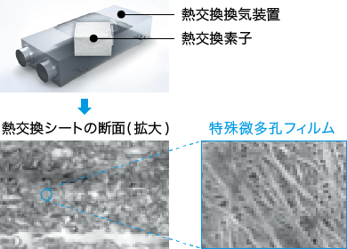
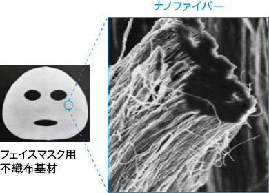

- HOME
- 研究・技術開発
- 研究・技術開発体制
- 開発・エンジニアリング組織
- 環境・モビリティ開発センター
環境・モビリティ開発センター
環境・モビリティ開発センターは、東レグループの環境・エネルギー分野における技術連携の中核組織として2011年1月に設立されました。現在は、資源・エネルギー問題、地球環境問題の解決や健康・長寿への貢献を目指すサステナビリティイノベーション事業での新製品開発を推進しています。
新エネルギー材料
次世代自動車の性能・安全性向上や低炭素社会の実現に貢献する燃料電池、リチウムイオン電池などの部材・材料開発を推進しています。燃料電池電極基材等の試作・評価設備、発電性能評価設備、ならびにリチウムイオン電池の試作・安全性評価設備をセンター内に保有し、材料・プロセスの要素技術開発、評価を行っています。
環境資材

省エネ・CO2削減、快適性向上などに貢献する住環境資材、吸音材、電磁波対策資材等の開発を推進しています。住環境資材においては、東レの先端素材である微多孔フィルムを適用した新規熱交換素子を開発、熱交換換気装置の大幅な性能向上に貢献しています。
衛生製品材料等
健康・長寿社会の実現に貢献する血糖値センサー、フェイスマスク基材、おむつなどの衛生製品材料などの開発を推進しています。当社繊維先端素材のナノファイバーを用いた美容用フェイスマスクは、従来品に比べ、肌への高い密着性と優れた薬液保持性を発揮します。

衛生材料用素材